| Project System: | NeuroDCT Artifact Reduction Lab (v3.4) |
| Submitted By: | [Your Name & Roll Number] [Teammate Name & Roll Number] |
| Submitted To: | [Faculty / Research Scholar Name] |
| Department / Institute: | Gauhati University (27 November 2026) |
| Repository: | https://github.com/Duljit2006/DIP-project |
Despite the availability of lossless image formats such as PNG and lossless WebP, lossy JPEG remains the predominant standard for web transmission, mobile messaging, and embedded imaging due to strict bandwidth and storage constraints. At low bitrates (high compression), standard JPEG compression partitions images into independent 8×8 blocks, transforms them via the 2D Discrete Cosine Transform (2D-DCT), and discards high-frequency alternating-current (AC) coefficients. This quantization yields two severe defects: blurred fine details (spectral loss) and visible checkerboard discontinuities across 8×8 borders (Dirichlet boundary blocking artifacts).
In this project, we systematically investigate three neural restoration paradigms across both frequency and spatial domains. First, we demonstrate why a pure Frequency Graph Neural Network (FrequencyGNN) operating on intra-block harmonic edges fails to reduce blocking (+0.00 dB to +0.01 dB PSNR gain on Set5) due to inter-block border blindness. Second, we show that ordering the pipeline as GNN → CNN achieves significant seam removal (+1.68 dB average gain) but introduces spectral drift—where spatial convolutions inadvertently corrupt the preserved low-frequency ground-truth coefficients. Finally, we introduce our proposed Dual-Domain Hybrid Architecture (CNN → GNN) augmented with Hard Spectral Consistency (Eq. 6). By eliminating spatial grid seams first via a residual CNN, re-projecting into the 2D-DCT domain, refining harmonic octaves, and clamping the known low frequencies back to exact ground truth, our final BSDS500-trained model (30 GNN + 70 CNN epochs) achieves an average improvement of +1.95 dB across Set5 (up to +4.13 dB on Butterfly, SSIM 0.9499) alongside +1.47 dB average improvement across Set14 (SSIM 0.9064). Furthermore, we deploy the complete inference system in an interactive, real-time web application (NeuroDCT Lab) running on GPU acceleration.
| Section | Topic Covered |
|---|---|
| Chapter 1 | Introduction, Bandwidth Dilemma & Mathematics of JPEG |
| Chapter 2 | Literature Review & Identified Architectural Gaps |
| Chapter 3 | Methodologies Investigated (Pure GNN, GNN→CNN, Proposed CNN→GNN) |
| Chapter 4 | Dataset Preparation, Loss Formulation & Training Pipeline |
| Chapter 5 | Experimental Results, Benchmarks (Set5 & Set14) & Visual Proof |
| Chapter 6 | NeuroDCT Interactive Web System & Deployment |
| Chapter 7 | Conclusion & Future Scope |
Modern lossless image formats such as PNG, TIFF, and lossless WebP preserve pixel values with zero distortion. However, uncompressed or losslessly compressed high-resolution images occupy 5× to 10× greater file sizes than lossy compressed equivalents. Across global mobile networks, social messaging platforms, web browsers, and low-bandwidth remote sensing links, transmitting multi-megabyte lossless files creates prohibitive latency and storage overhead. Consequently, JPEG (ISO/IEC 10918-1) continues to power the vast majority of digital imagery. The central Digital Image Processing challenge is therefore: can we retain JPEG's extreme compression efficiency while mathematically reconstructing lost structural fidelity at the receiver?
To exploit spatial redundancy and human visual insensitivity to high spatial frequencies, the JPEG encoder converts an RGB image to the YCbCr color space (separating luminance Y from chrominance Cb, Cr) and partitions the luminance plane into non-overlapping 8×8 pixel blocks. Each block f(x, y) is transformed into 64 orthogonal spatial frequency coefficients via the Type-II Orthonormal 2D Discrete Cosine Transform (2D-DCT):
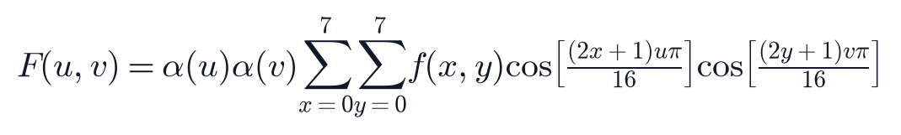 |
(Eq. 1) |
where α(0) = 1/√8 and α(k) = √(2/8) for k > 0. The top-left coefficient F(0,0) represents the block's average intensity (DC component), while coefficients toward the bottom-right represent progressively higher spatial frequencies (AC components). During quantization and zigzag truncation (e.g., keeping only the first c = 15 coefficients out of 64), the remaining 49 high-frequency coefficients are quantized to zero to save bits.
When the decoder applies the 2D Inverse DCT (2D-IDCT) independently to each 8×8 block, two distinct mathematical artifacts emerge:
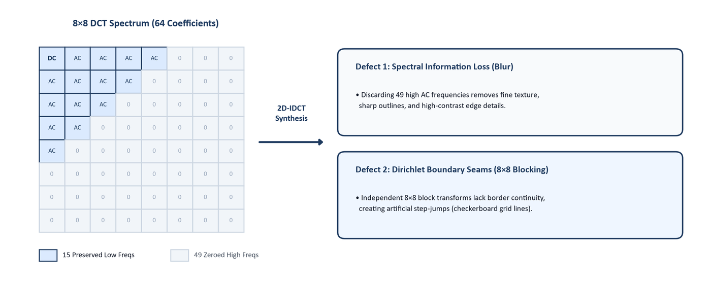
Existing JPEG artifact reduction and visual graph architectures motivate our dual-domain design. Below we review the classical foundations alongside two primary modern architectures—CARD (Sun et al., 2020) and Vision GNN / ViG (Han et al., NeurIPS 2022)—that directly inspired our 8×8 DCT graph formulation:
| Method / Reference | Key Mechanism & Strengths | Identified Architectural Limitation |
|---|---|---|
| Classical Spatial Filters (Bilateral, SA-DCT) |
Local spatial smoothing & adaptive transform thresholding. | Over-smooths genuine edges alongside block borders; unable to synthesize missing high-frequency harmonics. |
| ARCNN & DnCNN (Dong et al., 2015; Zhang et al., 2017) |
Pure pixel-domain CNN residual deblocking across seams. | Lacks DCT spectral constraints—causing Spectral Drift that distorts original low-frequency brightness and hue. |
| CARD (Sun et al., 2020) |
DCT prediction, overlapping 8×8 patches, wide residual blocks & quantization clipping prior. | Lacks explicit graph harmonic edges connecting fundamental frequencies to octave overtones. |
| Vision GNN (ViG) (Han et al., NeurIPS 2022) |
Patch graph nodes with non-local edge message passing. | Operates purely on semantic spatial patches; lacks 8×8 block alignment and DCT low-frequency spectral locking. |
To isolate the strengths and weaknesses of frequency-domain graphs and spatial convolutions, we designed and benchmarked three progressive architectures.
FrequencyGNN)In our first architecture, each 8×8 DCT block is modeled as a relational graph. To supply multi-block boundary context, we construct a 72-Node Spatial-Frequency Graph containing 64 intra-block DCT nodes and 8 spatial neighbor super-nodes (N, S, W, E, NW, NE, SW, SE), interconnected by 652 bidirectional edges capturing 8-neighborhood spectral adjacency and harmonic octave relationships ((u,v) ↔ (2u,v), (u,2v), (2u,2v)).
Each node carries a 10-channel feature vector: [amplitude, u_norm, v_norm, is_known, node_type, block_dc, ac_energy, hv_ratio, grad_x, grad_y]. The network uses 3 Graph Convolutional (GCNConv) layers (hidden_channels=128) with LayerNorm, LeakyReLU(0.2), and residual skip connections.
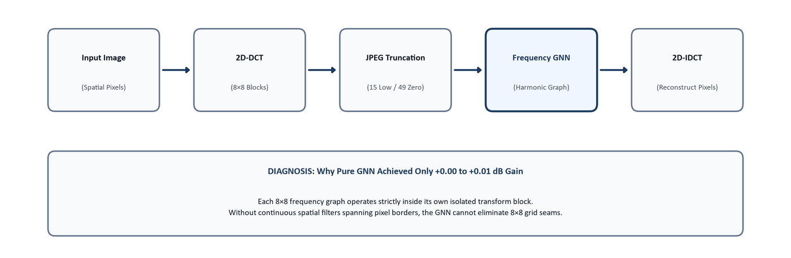
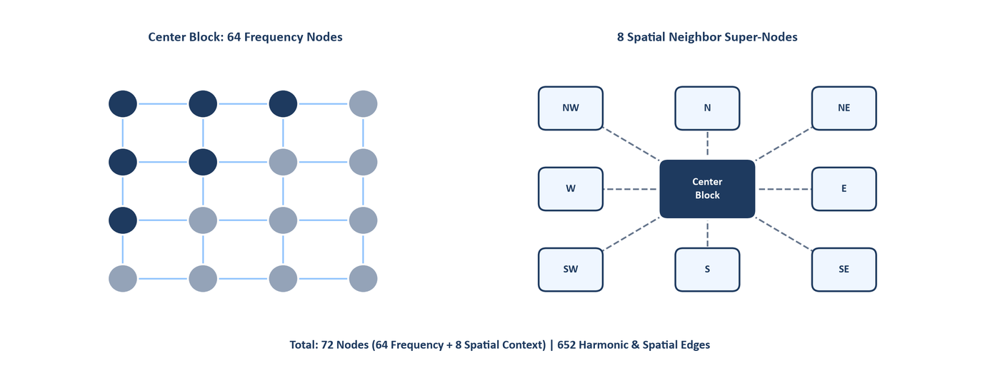
Result & Diagnosis: Pure GNN alone achieved only +0.01 dB improvement on Set5 (32.75 dB → 32.76 dB). Because message passing operates inside discrete 8×8 frequency windows, it lacks continuous pixel-level filters capable of spanning block boundaries.
GNN → CNN (Frequency First, Spatial Second)
To eliminate block boundaries, Stage 1 uses the Frequency GNN to estimate missing high-frequency coefficients, applies 2D-IDCT to obtain an intermediate pixel image, and passes it into Stage 2—a 4-layer Spatial Refiner CNN (SpatialRefinerCNN, 64 channels, 3×3 kernels, PReLU activations, global residual connection).
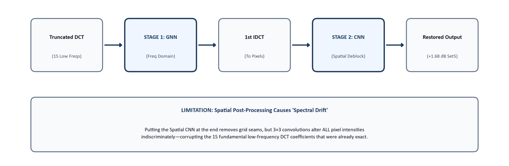
Result & Dilemma: Average Set5 PSNR jumped by +1.68 dB (32.75 dB → 34.43 dB), confirming that CNN convolutions eliminate blocking seams. However, placing the spatial CNN at the end introduced Spectral Drift: while smoothing seams, the 3×3 filters altered all pixel values indiscriminately, inadvertently corrupting the 15 low-frequency DCT coefficients that were already 100% accurate in the original compressed file.
CNN → GNN + Hard Spectral Lock (Best)Reversing the execution order resolves both flaws simultaneously through a dual-domain handshake:
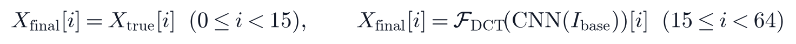 |
(Eq. 6) |
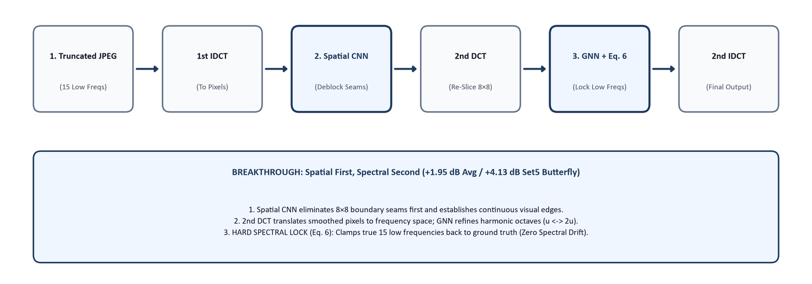
Training was conducted using the BSDS500 dataset (500 natural images partitioned across train, validation, and test splits, generating ~1.2 million 8×8 luminance blocks). An important experimental finding during scaling tests was that training a compact 4-layer CNN (~75,000 parameters) on raw random crops from massive 2K DSLR datasets (such as DIV2K + Flickr2K) led to underfitting and bokeh dilution (capping PSNR gains around +0.9 dB), because over half of random 2K camera crops fall on out-of-focus smooth backgrounds. By contrast, dense, edge-rich natural scenes in BSDS500 align tightly with our compact model capacity. Benchmark testing is conducted strictly on unseen standard datasets: Set5 and Set14.
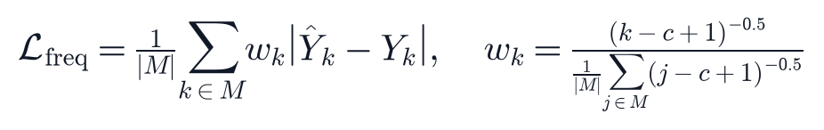 |
(Eq. 3) |
nn.L1Loss) to preserve sharp edges without the over-smoothing penalty associated with L2/MSE loss.In addition to standard PSNR and SSIM, we evaluate PSNR-B (Yim & Bovik), which explicitly augments MSE with the Blocking Effect Factor (BEF) across 8×8 boundaries to mathematically verify grid seam elimination:
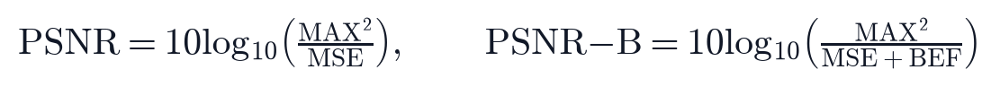 |
(Eq. 4) |
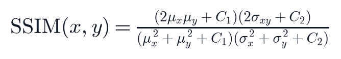 |
(Eq. 5) |
| Set5 Test Image | Baseline JPEG | Pure GNN | Hybrid (GNN→CNN) | Proposed (CNN→GNN) | CNN→GNN SSIM |
|---|---|---|---|---|---|
img_001 (Baby) | 36.41 dB | 36.41 dB (+0.00) | 36.81 dB (+0.40) | 37.03 dB (+0.62) | 0.9671 |
img_002 (Bird) | 36.14 dB | 36.15 dB (+0.01) | 38.52 dB (+2.38) | 38.93 dB (+2.80) | 0.9852 |
img_003 (Butterfly) | 26.40 dB | 26.40 dB (+0.00) | 30.17 dB (+3.77) | 30.53 dB (+4.13) | 0.9541 |
img_004 (Head) | 33.73 dB | 33.73 dB (+0.00) | 34.00 dB (+0.27) | 34.12 dB (+0.39) | 0.8764 |
img_005 (Woman) | 31.09 dB | 31.09 dB (+0.00) | 32.65 dB (+1.56) | 32.89 dB (+1.80) | 0.9670 |
| AVERAGE (Set5) | 32.75 dB | 32.76 dB (+0.00) | 34.43 dB (+1.68) | 34.70 dB (+1.95 dB) | 0.9499 |
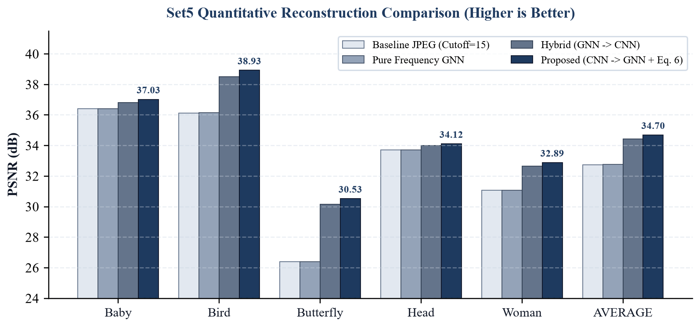
Evaluated across 14 diverse high-detail natural images in Set14, our newly trained BSDS500 model (30 GNN + 70 CNN epochs) achieved an overall average gain of +1.47 dB (29.57 dB → 31.04 dB, SSIM 0.9064), peaking at +3.67 dB on Monarch (img_011: 35.56 dB) and +3.57 dB on Zebra/PPT patterns (img_013: 31.46 dB).
| Set14 Image Subset / Highlight | Baseline JPEG | Pure GNN | Hybrid (GNN→CNN) | Proposed (CNN→GNN) | CNN→GNN SSIM |
|---|---|---|---|---|---|
img_002 (Barbara) | 26.97 dB | 26.97 dB (+0.00) | 27.22 dB (+0.26) | 27.29 dB (+0.33) | 0.8641 |
img_007 (Foreman/Building) | 29.47 dB | 29.47 dB (+0.00) | 31.37 dB (+1.90) | 31.58 dB (+2.11) | 0.9318 |
img_011 (Monarch) | 31.89 dB | 31.89 dB (+0.00) | 35.25 dB (+3.36) | 35.56 dB (+3.67) | 0.9719 |
img_013 (High-Freq Stripes) | 27.89 dB | 27.89 dB (+0.00) | 30.67 dB (+2.78) | 31.46 dB (+3.57) | 0.9788 |
img_014 (Zebra/Natural) | 30.46 dB | 30.47 dB (+0.00) | 31.61 dB (+1.15) | 32.09 dB (+1.63) | 0.9446 |
| AVERAGE (All 14 Set14 Images) | 29.57 dB | 29.57 dB (+0.00) | 30.80 dB (+1.24) | 31.04 dB (+1.47 dB) | 0.9064 |
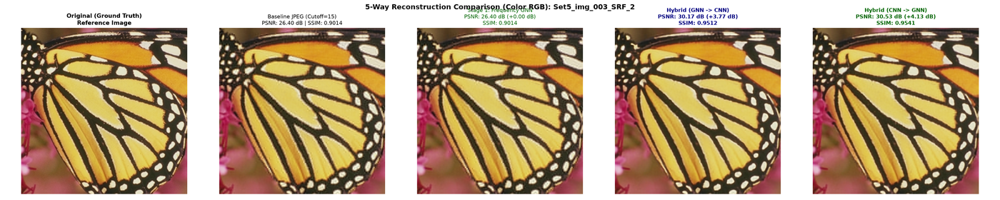
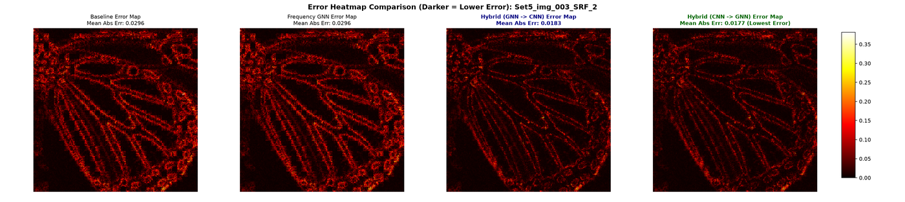
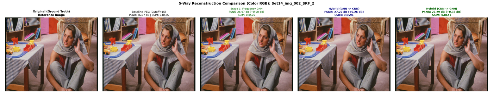
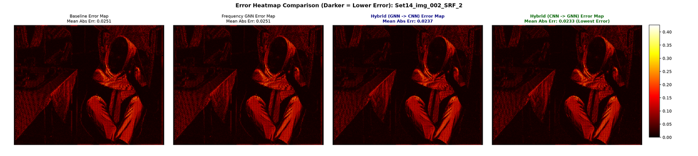
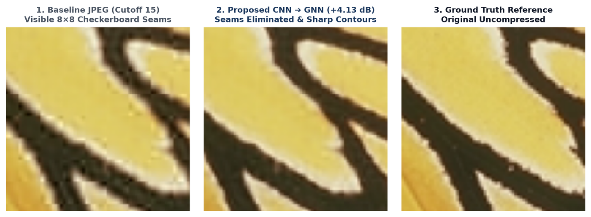
To make our research accessible for live evaluation and mobile testing by reviewers, we engineered a full-stack web laboratory application (NeuroDCT Research System):
server.py & src/inference.py): Built with FastAPI and Uvicorn, executing vectorized 2D-IDCT and batched PyTorch GPU graph inference in ~8–12 ms on an NVIDIA RTX 2050 (or Google Colab T4 GPU).web/index.html): Designed in a clinical Swiss laboratory theme across three structured stages:
cloudflared) enables instant testing on smartphones alongside zero-lag offline execution on the presenter's laptop.GNN → CNN: Showed that post-processing spatial convolutions inadvertently alter true preserved low-frequency coefficients (+1.68 dB avg Set5 gain).CNN → GNN + Hard Spectral Lock: Eliminated inter-block grid seams spatially before locking true low-frequency anchors and refining harmonic octaves—delivering up to +4.13 dB improvement on Set5 Butterfly and deploying a real-time interactive lab web application.